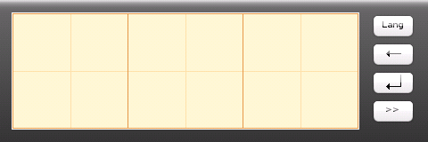
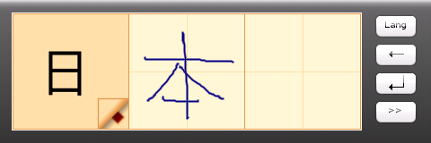
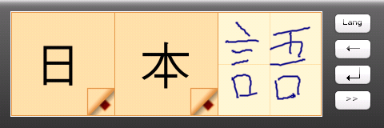
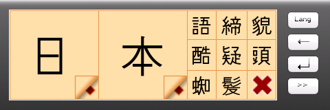

Enscribi is a handwriting recognition input method for Linux. It's mainly developed for the Openmoko Freerunner smartphone. Though it's a stand-alone application, it can be used as the default keyboard in the Illume window manager. The focus is on inputting Asian characters, but other languages will also be supported.
Enscribi uses the Enlightenment Foundation Libraries (EFL). The theme is written in Edje, a very powerful theming library. This makes it simple to develop and test new themes and user interfaces since the interface is decoupled from the backend.
For the character recognition the excellent Zinnia recognition engine is used. The recognition engine is modularized, so it's possible to support other engines as well. The character data from the Tomoe project is used.
At the moment, only Japanese and Chinese are supported. To support other languages, character stroke data for these languages would be needed. Also, since the characters of each language are different, a different theme for each language is preferable.
Screenshots
Here's how the interface looks when entering Japanese text:



If a character is not properly recognized, it's possible to choose the
correct one from the best matches by clicking in the lower right corner:

Get packages
Packages can be downloaded from opkg.org.
Enscribi
Zinnia
Zinnia-tomoe
Get the source
The source code is hosted on Github. Use the following to clone the repository:
git clone git://github.com/olofsj/enscribi.git